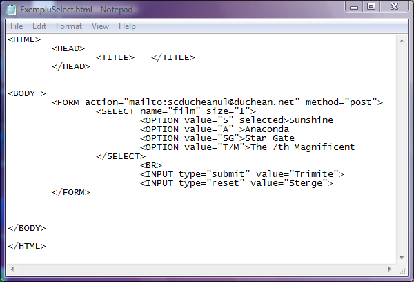
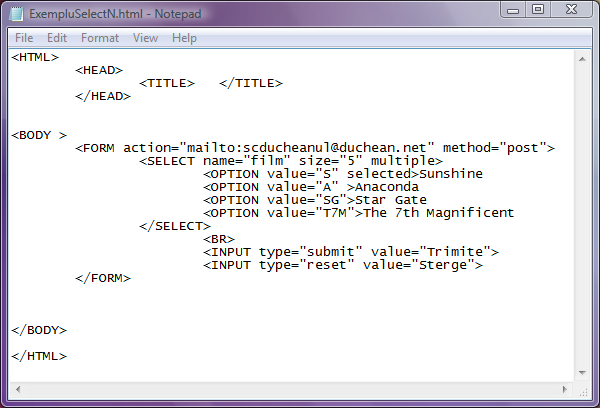

Eticheta SELECT
Listele de selectie sunt cunoscutele casete cu lista ascunsa, din care utilizatorul poate sa aleaga elementul dorit.
In formulare pot fi utilizate doua tipuri de liste de selectie: liste de selectie unica si liste de selectie multipla.
Oricare dintre cele doua tipuri de liste de selectie incepe cu o eticheta SELECT si se termina cu o eticheta
/SELECT.
Ambele etichete care delimiteaza lista se plaseaza in interiorul blocului FORM respectiv /FORM.
Liste de selectie unica
Se deschide lista cu eticheta SELECT care are doua atribute:
-atributul name care asociaza listei un nume care va fi utilizat de scripturi pentru a interpreta valoarea aleasa de
utilizator in forma name=valoare si a o prelucra in continuare.
-atributul size care are ca valoare un numar pozitiv ce reprezinta numarul de elemente din lista care vor fi vizibile
la un moment dat pentru utilizator. Pentru a vedea celelalte elemente se va folosi bara de derulare asociata casetei cu lista.
Pentru fiecare element al listei de selectie este necesara o eticheta OPTION unica. Cate elemente va contine lista de selectie
atatea etichete OPTION vor trebui editate in interiorul blocului SELECT respectiv /SELECT.
Etichetele OPTION pot avea la randul lor anumite atribute.
-atributul value care va avea ca valoare elementul listei. Odata selectat acest element el va fi asociat cu numele
listei de selectie si expediat serverului. Dupa eticheta OPTION va fi trecut numele necodificat al elementului listei
asa cum il va vedea utilizatorul.
-atributul selected fara vreo valoare dupa el desemneaza acel element al listei ca fiind implicit selectat. In lista
de selectie unica un singur element poate avea la un moment dat acest atribut.
Dupa popularea listei cu elemente se incheie lista cu eticheta /SELECT.
Iata mai jos un exemplu de formular cu lista de selectie unica si cu doua butoane, unul de expediere si unul de initializare:

Puteti verifica initializarea produsa de butonul Sterge, dar nu dati click pe butonul Trimite pentru ca adresa de e-mail
este fictiva!
Atentie!!!... Sa nu se faca confuzie intre ceea ce vede utilizatorul in lista si ceea ce este trimis serverului! Daca de
exemplu se selecteaza Anaconda, atunci serverului ii va fi trimis film="A" adica codificarea prin valoarea
atributului value a elementului listei de selectie.
Liste de selectie multipla
Singura diferenta in ceea ce priveste sintaxa fata de listele de selectie unica consta in faptul ca o lista de selectie
multipla are un atribut care o diferentiaza: atributul multiple al etichetei SELECT.
Atributul multiplenu are nici o valoare, simpla lui prezenta in eticheta SELECT permitand selectarea mai multor
elemente.
Iata exemplificat cele spuse mai sus:

Pentru a selecta mai multe elemente ale listei neadiacente folositi combinatia Ctrl+click iar pentru a selecta mai
multe elemente adiacente selectati intai primul element din grup iar apoi cu combinatia Shift+click ultimul element
din grup.
Inapoi la Controale